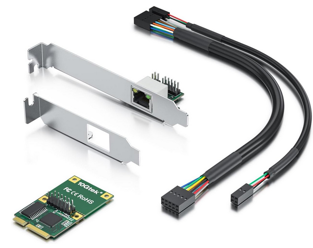

BytesOfProgress
DIY Router Building: Let's make your internet connection truly yours
19th December 2022 / 08:30 PM
I built a router out of a Fujitsu Thinclient ( Futro S720 ). The first step was getting an ethernet expansion card ( miniPCIe ) to have an additional ethernet port. I decided to use this one:
back